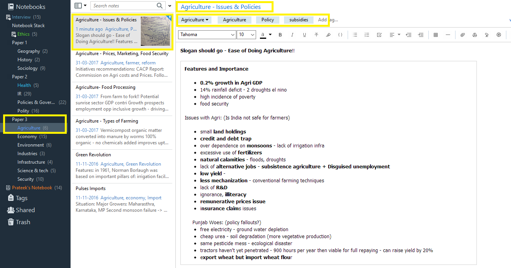
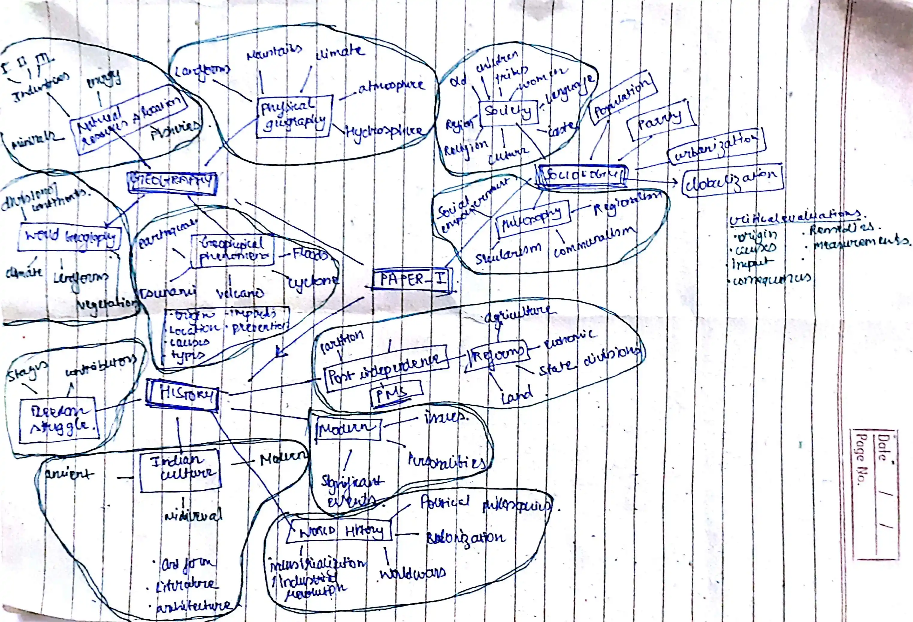

Index
- Why - How - IAS Requirements - Official Syllabus - Educational Resources - Information Architecture - Links to sourcesWhy?
- My answer to this question has 2 aspects: - My personal identity, which comes first in the sequence - I have hunger for knowledge on diverse subjects - I have a deep sense of duty towards my nation - I have lost my affinity for money, power, ego, and sense of purpose in this journey of corporate world - Proof of this is that no one in my family and friends know that I am preparing for civil services, and my goal is to keep this secret for as long as possible until I can't, I don't want their nature to change - I realized I get great fulfillment when I help people - By making donations - If someone asks me for any assistance in their work - If I am traveling on bike, which I do a lot, I give lifts to people if they ask, and they ask most of the time - I have a sense of responsibility for my actions and I want to lead people in a good direction by following right people - I am a very ethical person - I want to feel proud sitting in the office with National Emblem and and my country flag, knowing I am the right person for this position - I want to bring change in the society about religion, politics, education, and I understand scale of these problems, which I cannot bring at the level and scale if I pursue my corporate journey - Someone has to take responsibility for stabilizing this country, if people like me don't come forward and take this risk then those who do not deserve will get this position - I want to bring transparency to the general public how government policies are operating, how funds are flowing, so I can influence politics in a positive way - I could not get the justice from the system, I want to stand for justice - I have to bribe everywhere, to get my license, to get my passport verified - I could not get domicile, even when I meet all the requirements - I could not get the OBC certificate even if I meet all the requirements of non creamy layer - I want to support and provide for our kids to a future where they take India to the forefront in technology, and culture, my position in itself will bring that they have to do it someone important is watching them - UPSC requirements - The preparation phase - Since UPSC covers a wide range of domain knowledge, I got really excited for the preparation and learning phase, I used to get so excited that goosebumps were common - Service phase - UPSC requires civil servants to posses incorruptible personality under any circumstance which coincides with my personality, I nature is to not ask even for any personal favour if this puts me in a position where I am obliged to compromise with my ethical framework - My aim is to be an IAS officer, I am interested in the diverse work profile of this post - The overall work profile of IAS coincides with my personality - The changes which I want to bring in society, UPSC IAS is the most efficient way for me to achieve this - I consider myself as a great quality human resource that is at disposal for my country -IAS requirements - Mental - Satisfied with IAS work domain, I can feel the sense of purpose - Requirement met - Physical - No severe physical and visual disability preventing from doing tasks while in service - Glasses, contact lenses allowed during medical for non-technical service like IAS - Requirement met - Educational - Graduation from any recognized university - Requirement met - Maturity/Experience - Having experience in corporate world and framework x - Requirement met - Moral/Ethical - Having good moral and ethical framework - Requirement metHow?
- Personal nature - My nature is to easily grasp a wide domain of knowledge - When it comes to be at the top, I had beaten the shit out of toppers in past and I will do it one more last time once and for all to put an end this debate weather I am capable or not - I have lived enough in fear, it's time to be fearless now, let's show the world what you are truly capable of - I will fight till the end, won't give up - This is a war - It will require 24/7 deployment - It won't take any excuses - If I can learn big MCA notes in 1 day then I am fully capable of doing UPSC subjects in a few days - Time to test the potential, give everything you have in the first attempt - Experience with maturity - I have gathered valuable experience in life and put this knowledge in my personality and have built framework X from scratch, which gives me a very big leverage in preparation - Remember who you are right now, and not who you were in the past, you are an improved version of yourself - Ability to learn new skills - Time - It will take 2 years, there's no hurry, take it as a marathon with no pressure - Time will pass eventually, weather you pass it doing nothing or working, there will be a point in time in future where you will be thankful that you tried - Backup plan - You have backup plan as software developer - Regret - I will regret if I don't participate in this exam and give up, I have to take this risk - Competitive - The actual competition is very low based on analysis - At the time of development of this framework, only approx 25% of the total population is in age bracket to be eligible for this exam. Only 1% is sincere enough for this exam, which is approx 35 lakh. In this only 12 lakh fill out the application form, from which only approx 6 lakh appear for prelims, in these 6 lakhs only 13K are having enough knowledge to appear in main, from which only 3K have the ability to present the information based on requirement to appear for the interview. Now only approx 900 will be selected from which only first 50 will get IAS which are from general category. So, there is a good chance I can clear it. I think I can get manage rank 1, I am fearless against the competition. - Luck is part of this exam, but I have to take the risk, it may not favour one time, two time, three time, but it will eventually favour one day - Do not fear the people who are already ahead in this learning curve, a lot of new people come and create rampage with continuous and steady progress over a year - Average people are fully capable of clearing this exam and getting good ranks - Law of attraction - Image a still image of you sitting in your office with Ashok Stambh and National flag behind backing your actions - Strategy - UPSC has to be prepared in reverse order of it's stages, first prepare interview, then mains and finally the prelims - Do not accept defeat till last moment, fight, fight, fight, ... - If it turns out to be a bad day, try to reach 50% productivity, the bad days will decide the real result - Join significant telegram groups for awareness -IAS PCS Pathshala -Dr. Shivin - Preparation sequence - Prepare interview - Prepare draft with the information that will be mentioned in the document - Bring the hobbies and other information in general practice - Rest of the information will be added during the prelims and mains phase - Prepare mains - Prepare GS 1. History | Art and culture | English 2. Geography | Hindi 3. Constitution | Polity | Governance | Indian society 4. Economy 5. Environment | Science and technology | Disaster management 6. Ethics | Social justice 7. International relations - Prepare optional - Prepare prelims - Prepare CSAT - Revise GS - Todo list - Strictly bound the sources to the UPSC syllabus, word by word - Popular books - Toppers notes - Coaching notes - Consistency in the learning phase - Heavy use of AI models like chatgpt/deepmind, they are expert in question answering confirmed by AIR-1 - After information framework is developed, revise again and again to build the internal intelligence model on this data like AI - Regular pursuit of hobbies - General studies of graduation subjects - Regular study of optional subject - Newspaper reading for better language understanding and knowledge representation - Develop skills - Improve English (Use chatgpt to practice converting hindi to english and validation and improve english grammar rules) - Improve Hindi - Improve handwriting in both languages - Improve drawing skills - Improve visualization skills - Improve clarity in thinking and writing - Improve memorization skills - Newspaper reading skills - Questioning skills - Speaking and communication skills - Improve answer writing skills - Optimize personality for IAS - Reasoning by analogy, deduction, induction for MCQs (very crucial skill) - Practice, practice, practice ... on regular basis with periodic test series - Re-evaluate the framework overtime with new information - Join a professional answer-checking facility to make sure answer writing is sufficient for mains - Not todo list - Spending too much time in current affairs - Changing the source materials very often, and not sticking to the sources - Taking stress of this exam - Prioritizing subjects, there is no exact priority pattern for subjects, UPSC continuously changes the priority of subjects - Subjects preparation strategy - Include subjects in batches during the day - First round - Strategy preparation - Resource finalization - English language - Second round - History - Geography - Art and culture - Science and technology - PT365 - Third round - Economy - Environment - CSAT - PT365 - Fourth round - Polity - Constitution - Governance - Indian society - PT365 - Fifth round - Hindi language - Disaster management - Ethics - Social justice - International relations - Sixth round - Answer writing - Guidelines during personality test - Candidate should - Wear proper formal clothes that look neat and clean including tie, shoes, socks, everything - Sit properly, relaxed posture with back on chair and arms resting on armrests of chair - Can mix English with other Indian language - Candidate can ask for clarification on a question - Very crisp communication to the point - Candidate can politely ask for few seconds to recollect or say he need to look into this - Answer from the point of view of general public and not your on general matters - Give glance to other interviews so they don't feel ignored - Candidate should not - Do not lie at all, be honest, 0% tolerance - Do not take political sides, stay neutral - Do not ask questions from interview panel - Do not use any wrong word, like not using "please" but using "privilege"My personal information
- Hobbies 1. Motorcycling 2. Entertainment youtube videos on technology, nature, cosmos and stand-up comedy 3. Listening to music, often singing along - Prepare performance for interview -Prepare a funny song and jokes list in English -Practice ghoda eeee.... funny sound in case to deliver a quick jokeOfficial syllabus of UPSC 2025
- Prelims - Paper 1 - General Studies 1 (200 marks) - Current events of national and international importance - History of India and Indian National Movement - Indian and World Geography - Physical, Social, Economic geography of India and the World - Indian Polity and Governance - Constitution, Political System, Panchayati Raj, Public Policy, Rights Issues - Economic and Social Development - Sustainable Development, Poverty, Inclusion, Demographics, Social Sector Initiatives, etc - General issues on Environmental Ecology, Biodiversity and Climate Change - that do not require subject specialization - General Science - Paper 2 - General Studies 2/Civil Services Aptitude Test (200 marks) - Comprehension - Interpersonal skills including communication skills - Logical reasoning and analytical ability - Decision-making and problem solving - General mental ability - Basic numeracy (numbers and their relations, orders of magnitude, etc.) (Class X level) - Data interpretation (charts, graphs, tables, data sufficiency etc. - Class X level) - Mains - Qualifying Papers on Indian Languages and English - Paper 1 - English (300 marks) (i) Comprehension of given passages (ii) Precise Writing (iii) Usage and Vocabulary (iv) Short Essays - Paper 2 - Indian Language (300 marks) (i) Comprehension of given passages (ii) Precise Writing (iii) Usage and Vocabulary (iv) Short Essays (v) Translation from English to the Indian Language and vice-versa - Merit-based Papers: - Paper 1 - Essay (250 marks) - Candidates may be required to write essays on multiple topics. They will be expected to keep close to the subject of the essay to arrange their ideas in an orderly fashion and to write concisely. Credit will be given for effective and exact expression. - Paper 2 - General Studies 1: Indian Heritage and Culture, History and Geography of the World and the Society (250 marks) - Indian culture will cover the salient aspects of Art Forms, literature and Architecture from ancient to modern times. - Modern Indian history from about the middle of the eighteenth century until the present - significant events, personalities, issues. - The Freedom Struggle — its various stages and important contributors/contributions from different parts of the country. - Post-independence consolidation and reorganisation within the country. - History of the world will include events from the 18th century such as industrial revolution, world wars, redrawal of national boundaries, colonisation, decolonization, political philosophies like communism, capitalism, socialism etc.— their forms and effect on the society. - Salient features of Indian Society, Diversity of India. - Role of women and women's organisation, population and associated issues, poverty and developmental issues, urbanisation, their problems and their remedies. - Effects of globalisation on Indian society. - Social empowerment, communalism, regionalism & secularism. - Salient features of the world's physical geography. - Distribution of key natural resources across the world (including South Asia and the Indian sub-continent); factors responsible for the location of primary, secondary, and tertiary sector industries in various parts of the world (including India). - Important Geophysical phenomena such as earthquakes, Tsunami, Volcanic activity, cyclones. etc., geographical features and their location-changes in critical geographical features (including water-bodies and ice-caps) and in flora and fauna and the effects of such changes. - Paper 3 - General Studies 2: Governance, Constitution, Polity, Social Justice, and International Relations (250 marks) - Constitution of India —historical underpinnings, evolution, features, amendments, significant provisions and basic structure. - Functions and responsibilities of the Union and the States, issues and challenges pertaining to the federal structure, devolution of powers and finances up to local levels and challenges therein. - Separation of powers between various organs dispute redressal mechanisms and institutions. - Comparison of the Indian constitutional scheme with that of other countries. - Parliament and State legislatures—structure, functioning, conduct of business, powers & privileges and issues arising out of these. - Structure, organisation and functioning of the Executive and the Judiciary—Ministries and Departments of the Government; pressure groups and formal/informal associations and their role in the Polity. - Salient features of the Representation of People's Act. - Appointment to various Constitutional posts, powers, functions and responsibilities of various Constitutional Bodies. - Statutory, regulatory and various quasi-judicial bodies. - Government policies and interventions for development in various sectors and issues arising out of their design and implementation. - Development processes and the development industry —the role of NGOs, SHGs, various groups and associations, donors, charities, institutional and other stakeholders. - Welfare schemes for vulnerable sections of the population by the Centre and States and the performance of these schemes; mechanisms, laws, institutions and Bodies constituted for the protection and betterment of these vulnerable sections. - Issues relating to development and management of Social Sector/Services relating to Health, Education, Human Resources. - Issues relating to poverty and hunger. - Important aspects of governance, transparency and accountability, e-governance applications, models, successes, limitations, and potential; citizens charters, transparency & accountability and institutional and other measures. - Role of civil services in a democracy. - India and its neighbourhood- relations. - Bilateral, regional and global groupings and agreements involving India and/or affecting India's interests. - Effect of policies and politics of developed and developing countries on India's interests, Indian diaspora. - Important International institutions, agencies and fora- their structure, mandate. - Paper 4 - General Studies 3: Technology, Economic Development, Biodiversity, Environment, Security and Disaster Management (250 marks) - Indian Economy and issues relating to planning, mobilisation, of resources, growth, development and employment. - Inclusive growth and issues arising from it. - Government Budgeting. - Major crops-cropping patterns in various parts of the country, - different types of irrigation and irrigation systems storage, transport and marketing of agricultural produce and issues and related constraints; e-technology in the aid of farmers. - Issues related to direct and indirect farm subsidies and minimum support prices; Public Distribution System- objectives, functioning, limitations, revamping; issues of buffer stocks and food security; Technology missions; economics of animal-rearing. - Food processing and related industries in India- scope and significance, location, upstream and downstream requirements, supply chain management. - Land reforms in India. - Effects of liberalisation on the economy, changes in industrial policy and their effects on industrial growth. - Infrastructure: Energy, Ports, Roads, Airports, Railways etc. - Investment models. - Science and Technology- developments and their applications and effects in everyday life. - Achievements of Indians in science & technology; indigenization of technology and developing new technology - Awareness in the fields of IT, Space, Computers, robotics, nano-technology, bio-technology and issues relating to intellectual property rights. - Conservation, environmental pollution and degradation, environmental impact assessment. - Disaster and disaster management. - Linkages between development and spread of extremism. - Role of external state and non-state actors in creating challenges to internal security. - Challenges to internal security through communication networks, role of media and social networking sites in internal security challenges, basics of cyber security; money-laundering and its prevention. - Security challenges and their management in border areas - linkages of organized crime with terrorism. - Various Security forces and agencies and their mandate. - Paper 5 - General Studies 4: Ethics, Integrity and Aptitude (250 marks) - This paper will include questions to test the candidates' attitude and approach to issues relating to integrity, probity in public life and his problem-solving approach to various issues and conflicts faced by him in dealing with society. Questions may utilise the case study approach to determine these aspects. - Ethics and Human Interface: Essence, determinants and consequences of Ethics in-human actions; dimensions of ethics; ethics - in private and public relationships. Human Values - lessons from the lives and teachings of great leaders, reformers and administrators; role of family society and educational institutions in inculcating values. - Attitude: content, structure, function; its influence and relation with thought and behaviour; moral and political attitudes; social influence and persuasion. - Aptitude and foundational values for Civil Service, integrity, impartiality and non-partisanship, objectivity, dedication to public service, empathy, tolerance and compassion towards the weaker sections. - Emotional intelligence-concepts, and their utilities and application in administration and governance. - Contributions of moral thinkers and philosophers from India and the world. - Public/Civil service values and Ethics in Public administration: Status and problems; ethical concerns and dilemmas in government and private institutions; laws, rules, regulations and conscience as sources of ethical guidance; accountability and ethical governance; strengthening of ethical and moral values in governance; ethical issues in international relations and funding; corporate governance. - Probity in Governance: Concept of public service; Philosophical basis of governance and probity; Information sharing and transparency in government, Right to Information, Codes of Ethics, Codes of Conduct, Citizen's Charters, Work culture, Quality of service delivery, Utilisation of public funds, challenges of corruption. - Case Studies on the above issues. - Paper 6 - Optional (250 marks) - Update syllabus based on subject selection - This optional has single subject but taken in two different papers - Paper 7 - Optional (250 marks) - Update syllabus based on subject selection - Interview - Overall UPSC syllabus - Your graduation subjects - Personality test - Analytical thinking - Practical applicability of knowledgeEducational Resources
- Use PYQs for gap filling in static source notes - Watch book tutorials from YouTube playlists to quick grasp of concepts - Directional sources - PYQs - Topper's notes extremely important for covering the multi-dimensional aspect and organization of information - Current affairs - PT 365 - Strongly prepare linked static topics to major news - Gaurav Kaushal Sir (AIR 1 2013 CSE) & Akshat Jain Sir (AIR 2 2018 CSE) - Maths & Reasoning - Up to Class 10th NCERT - Reasoning PYQs - History - Ancient - "India's Ancient Past" by R.S. Sharma (11th NCERT old edition) - Medieval - "History of Medieval India" by Satish Chandra (11th NCERT old edition) - Modern - Dr. Shivin sir's notes (combination of spectrum + NCERT) - Post independence - "India since independence" by Bipin Chandra (12th NCERT) - World history - Contemporary world history (12th NCERT) - This book is very detailed, but it will be helpful in establishing the base for International Relations - Art and Culture - Only Nitin Singhania Art and culture -The book is very detailed, but the data from this book will be helpful in prelims and Neural network experience building - Indian Society - Newspaper Reading - Introducing society (11th NCERT) - Understanding society (11th NCERT) - Indian society (12th NCERT) - Social change and development in india (12th NCERT) - Geography - NCERT 11th - 12th (All 4 books, 11'th and 12'th NCERT) - GC leong (Supplement PYQs) - Atlas (for Maps) - Dr. Shivin sir's handwritten notes (Reference) - Constitution and Polity - Indian Constitution at Work (Class 11th NCERT) -Laxmikant - No need for NCERT, as it's providing full coverage in simple language - Arc reports (only for reference) -1, 4, 6, 9, 10, 11, 12 - 2nd ARC Sixth Report - Local Governance - Governance - 2nd ARC Reports (1st, 4th, 6th, 9th, 10th, 11th, 12th) (Only summary) - Vision IAS Notes - Current Affairs - Social Justice - Government Policies and Intervention, Welfare Schemes and Bodies Constituted for Vulnerable Sections, Social Sector/Services Related to Health, Education, and Human Resources, Issues Related to Poverty and Hunger. - NITI Aayog - Three-Year Agenda Action - Budget and Economic Survey - International Relations - Contemporary World Politics (12th NCERT New) - Regular Newspaper Reading Including Editorials (Ignore purely political editorials) - PIB Website - Internet and Newspapers Regarding International Groups/Organizations and High Officials' Meetings (PM Visit, etc.) - MEA Website (Monthly Major Achievements of MEA) - Vision IAS Current Affairs Material - Editorials - Ministry of External Affairs Website - Economy - Leverage Mrunal sir notes (highly recommended) along with his youtube videos - To be removed - Economics (9th NCERT) - Understanding economic development (10th NCERT) - Indian economic development (11th NCERT) - Introducing macro economics (12th NCERT) -Other important resources -Economic survey summary -Key features of budgets summary -Budget summaries (gov published) -Key features -Overall summary -Implementation of budget announcement - Environment - Shankar IAS - Not going with Dr. Shivin because Shankar IAS is more concise and broad with diagrams (which I though it was not having) - Current Affairs - Internal Security and Disaster Management - Internal Security and Disaster Management by Ashok Kumar and Vipul - 2nd ARC (3rd Report) - NDMA Guidelines - Current Affairs - Science and Technology - Dr. Shivin's PDFs (Combines all the topics) - Current Affairs - Ethics - 2nd ARC (4th Report) (Only Summary) - 2nd ARC (12th Report) (Only Summary) - Lexicon for Ethics, Integrity, and Aptitude by ChronicleInformation architecture
- General information document - Requirement of this document - This data is based on PYQs and will help in MCQ elimination technique and adding stats to mains answer writing - Knowledge of important things and not personal niche things - Basic knowledge and not detailed knowledge - Use of reasoning techniques like analogy, induction, deduction - Make generic tables for static topics like ancient, medieval, etc, important ideas, rulers, etc to develop highly coherent neural network - Period of various sultanates, kingdoms, etc - Evolution of art and culture - State of women over history from ancient to post-independence - Evolution of the caste system - Evolution of economics and trade - Evolution of education - Evolution of government - Nature - Named forests - Type of it like tropical, etc - Trees and plants in it - Animals in it - Hills and mountain ranges - Rivers - Include from where it flows Kashmir -> Punjab -> Uttrakhand -> etc - Other popular water bodies like lakes, swamp, salt pans, peatlands etc - National Parks, Sanctuaries, Biosphere Reserves in India - Winds, jetstreams, etc - International agreements for environment - IUCN Red List categories - Important endangered and invasive species - Sustainable development - Specie organization - Bio structure of species like microorganisms, mammals, insects, mushrooms, fishes, birds, etc in a nested structure - Their behaviors like nocturnal, carnivorous, gestation period, and other important facts, etc - Cosmic world - Pulsars, Nebulae, etc - Celestial projects and tools like bubble telescope - Basic features of each planet - Their distance from sun, revolution, rotation - Detailed features of earth-like shape, radiation received, etc - Science information structured up to 10 - Basic elements in the periodic table - Their use - Their facts - Their extraction and related issues - Basic chemicals and gases - Their use and behaviors like laughing, blood vessel relaxing, etc - Important techniques - Aerial metagenomics - Microsatellite DNA - Etc - Technological developments - AI, Spacex, Tesla, etc - Man-made entities - Ports - Dams - Nuclear plants - Roads - Coal plants - Special detailed section for India - Important personalities - Kings - Philosophers - Scientists - Politicians - Authors - Important tools - Accelerometers, barometers, sensors, biofilters, seismographs, etc - Energy and power - Fuels - Methods - Etc - Important diseases - Symptoms - Causes - Prevention - Important outbreaks - Other facts - Important weapon systems - Missiles - Jets - Defence - Warships - Etc - Countries with their details - Government and constitution - Population - Demographics - Food production - Mineral deposits and productions - Power production - Space - Economy - Education - Imports/Exports - Important relations with other countries - Important banks - Important markets, industries, sectors, etc - Government bond market - Stock market - Treasury bill market - Important industries - Important enterprises - Important sectors like health, education, etc - World specific - Important councils - Important treaties internationally - Global issues and their solutions - Global warming - Wars - Overpopulation - Important historical wars - Important days - Health day, etc - Important structures - Airports, Railway stations, etc - Important projects in the world - Important awards internationally - Current important occupied posts by people - UN head, WHO head, President, etc - Important relations in world - Defense deals - Tariff wars - International Organizations and groups - Classify based on nature, politics, economics, etc - WHO, NATO, etc - India specific - Important commissions in India - Important councils india - Important institutions in India - Important supreme court judgements - Important case studies in India - Important Yojnas in India like polio, hum-do-humare-do, etc - Important tribes in India - Andaman and nicobar, etc - Important data related to national identity - Flag, Ashok Stambh, food, animal, sport, etc - Indian constitutional bodies - Important Indian bills and acts - Important corruptions - Involving politicians, bureaucrats, etc - Important days relevant to syllabus - Handloom Day, Constitution Day, etc - Important structures - Airports, Railway stations, etc - Different castes - People with different names in caste based on location - Important projects in India - Diamond quadrilateral project, etc - Important awards in India - Important movements in Indian history - Important acts in British India and viceroy, impact, etc sequence wise - Important Indian empires, dynasties, kingdoms, etc - Their location - Demographics - Other important facts - Important historical wars - Historical sites in India - Their location - Background - More info - Current important occupied posts by people - PM, secretary, etc - National organizations and groups recognized by the government - Structure-based on their type like politics, nature, humanity, etc - Basic Indian constitution structuring like amendments, etc - Religions - Location - Important leaders - Principles - Practices - Other facts - Important reports of the last 5 years - Health report - Population report - etc - General terms - Fertility rates, etc - Famous quotes - Structure based on type like war, love, philosophy, etc - Dataset of different parameters - Crime rate - Education rate - Fertility rate - Climate change - And other different aspects over the years - PYQs compilation, analysis and prediction document - Make your own PYQs compilation document, use this document for predicting future questions using advanced AI models and practice these predicted questions with their generated answers, put these generated answers in a separate compilation and revise again and again to learn answer writing strategy - Find videos, books of expert analyzers of PYQs to leverage their effort - Analyze the pattern and know what UPSC will ask and want to ask, what are the contextual requirements, this will help in figure out what to focus in syllabus - These topics will help in filling information gap - PYQs will help in prediction of future topics related to current affairs, topics, etc - Answer writing document - Use deep-seek for UPSC to gain an understanding of how it understands the questions to reason and provide an answer - PYQ questions and mapping of answer points from analysis of toppers answers - This will help in covering the multi-dimensional aspect of answering - Use keywords, etc not big sentences - Integrated approach document - Define aspects like national, international, law, constitution, history, technology, calamity, etc and how they interact with each other - For example poor politics result in poor economics, result in poor internation relations, etc - Mindmaps of keywords - This can be interlinked, no limitation on linkages - How dynamic current affairs can be integrated with static data - Geography of whole world - This will include everything like location on map, flora and fauna, demographics, history, famous people, and lot more data etc - One pager pre structured answers on microthemes ready for mains (repeated themes like temple architecture, etc) - There is no time to generate answer structure in mains, rely on pre structured answer system - Subject information documents - Notes - Note making process - First phase (digital detailed notes) 1. Convert books to text files - This will make sure perfect information is used as base 2. Format these files to proper structure 3. Use AI to re-organize the data 4. Add images 5. Include PYQs in each note file 6. Integrate current affairs 7. Add processed tables to connect and compare the full information for deep coherent understanding - Second phase (physical one pagers) 1. After complete understanding from digital notes, start physical note making 2. Learn and practice answer writing before beginning with physical notes - Analyze the notes of at least 5 toppers - For figuring out what's important, how information is organized and new techniques - For adding missing informational dimensions that has already worked - Because the information presented in these notes will be very close to real answers 3. Use A4 sheets with blue pen 4. Keep notes as close as possible to main answers - Additional info - Strictly arrange syllabus based on official syllabus sub headings - Include diagrams, flowcharts, etc - Information should be very precise and crisp with examples, positives, negatives, factual report data, etc - It would be impossible to revise these notes if they go in thousands of pages - Example: -
- Use mind maps to form a better neural network with keywords, this will help in easy recalling of information during the examination - Put a single letter or topic at the center then branch out in multi-dimension with further nested branching - Example: -
- Subjects - English - Hindi - History - Art and culture - Indian society - Geography - Constitution and Polity - Governance - Social justice - International relations - Economy - Environment - Internal security and disaster management - Science and technology - Ethics - Optional - Current affairs analysis document - Classification based on subject - Their background - Who is involved - Locations - Solution - More aspects - Interview document - Interview draft document - Import answering styles in interview - Not knowing the answer - Sorry sir, I will have to look into this - Sorry sir, I have heard about it but don't know much details - Not having factual data - Sir, I do not have factual data of the current situations like how much schools, colleges are open, how much funds are diverted, so I would hold myself from making generalized opinion on it, but I can give you the ground reality as I have seen in term of positives and negativesPreparation time analysis
-Time analysis for full coverage after NCERTs - CSAT : - History : - Geography : - Art and culture : - Constitution, governance and Polity : - Indian society and social justice : - Economics : - Science, technology and environment : - Ethics : - International relation : - Languages : - Current affairs : - Answer writing : - Total :Link to sources
- General information document (Use ChatGPT to generate the general dataset) - Nature - Specie organization - Cosmic world - Basic science - Man-made entities - Important personalities - Important tools - Energy and power - Important diseases - Important weapon systems - Countries with their details - Important markets, sectors ,industries, etc - World specific general info - India specific general info - Basic Indian constitution - Religions - Important reports of the last 5 years - General terms - Famous quotes - Dataset of different parameters - PYQs detailed analysis document - Answer writing document - Subject information documents - English - Hindi - History - Art and culture - Indian society - Geography - Constitution and Polity - Governance - Social Justice - International relations - Economy - Environment - Internal security and disaster management - Science and technology - Ethics -Optional - Current affairs document - Interview document